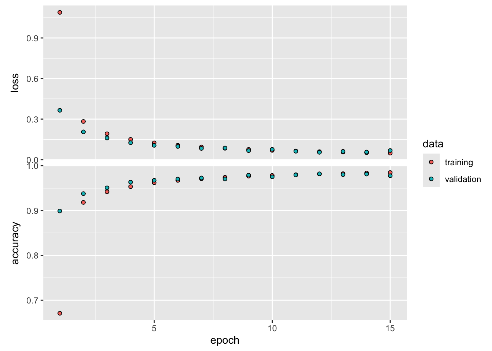

{kind=link}
{kind=link}
{kind=link}
{kind=link}
{kind=link}
{kind=link}
{kind=link}
{kind=link}
{kind=link}
library(keras)
reticulate::use_condaenv(condaenv = "r-tensorflow")
lenet5 <- keras_model_sequential() %>%
layer_conv_2d(kernel_size=c(5,5),
filters =6,
padding ="same",
activation ="sigmoid",
input_shape=c(28,28,1),
name ="Conv_1"
) %>%
layer_average_pooling_2d(pool_size=c(2,2),
name ="Pool_1") %>%
layer_conv_2d(kernel_size=c(5,5),
filters =16,
activation ="sigmoid",
name ="Conv_2") %>%
layer_average_pooling_2d(pool_size=c(2,2),
name="Pool_2") %>%
layer_flatten(name="Flatten") %>%
layer_dense(units =120,
activation="sigmoid",
name ="FC_1") %>%
layer_dense(units =84,
activation="sigmoid",
name ="FC_2") %>%
layer_dense(units =10,
activation="softmax",
name ="Output")32 Deep Learning
32.1 Introduction
We can at best provide an introduction into the vast topic of deep learning in this material. Our goal is to continue the discussion of neural networks and move from the generic ANN to specialized neural networks that are used for specific types of data and to specialized forms of learning from data. Figure 32.1 categorizes important approaches in deep learning.
Convolutional neural networks process data that appears on a grid (Section 32.2). The most frequent case is two-dimensional data in images that are arranged into rows and columns of pixels. These networks take advantage of the spatial layout of the pixels and train neural networks for tasks that are relevant in computer vision: object detection, object classification, edge detection, face detection and recognition, optical character recognition (OCR) and so forth.
Recurrent neural networks process data that are sequential in nature such as text or time series (Section 32.3).
Deep neural networks are one manifestation of deep learning.
Since 2017, when the architecture was described in Vaswani et al. (2017), and in particular since 2022, when Chat GPT 3.5 was released, transformer architectures have revolutionized the approach to natural language modeling and to artificial intelligence in general. We give a brief introduction into transformer architectures as an evolution of recurrent encoder/decoder networks in Section 32.4.
Reinforcement learning also belongs to the deep learning technologies (Chapter 33). It is a very different form of learning that does not fall neatly into the delineation of supervised and unsupervised methods of learning. In reinforcement learning, an agent reacts to feedback from the environment and chooses actions to optimize future positive feedback.
Deep learning flipped the narrative about artificial intelligence applying to tasks that are easy for computers but difficult for humans. Automating things that are intuitive for us, such as sensing the world, reading, writing, playing games, understanding language, were long thought to be out of reach for computers. That changed with the rise of deep learning in the early 2000s and was marked by watershed moments such as a reinforcement-trained system beating the world’s best Go player 4:1.
The idea of deep learning is to represent solutions as a hierarchy of related concepts. The hierarchy looks like a layered graph, hence the name deep learning. Instead of engineering features and trying to predict or classify based on carefully chosen features, deep learning starts with the obvious inputs (pixels, audio, text) and learns concepts about them from the data. Instead of providing to the system representation of the concepts through features, we let the system discover representations. The definition of deep learning according to Goodfellow, Bengio, and Courville (2016) reflects this view:
Deep learning is a particular kind of machine learning that achieves great power and flexibility by learning to represent the world as a nested hierarchy of concepts, with each concept defined in relation to simpler concepts, and more abstract representations computed in terms of less abstract ones.
Figure 32.2, adapted from Goodfellow, Bengio, and Courville (2016), depicts this concept for the case of object classification with images. To build a model that can classify the content of the image directly from the pixel information is difficult at best. However, we can train a model to learn different representations about the image content, first colors, then edges, and so forth. The combination of the abstract representations then allows the algorithm to assign “probabilities” with the possible object categories. Based on the probabilities we choose a possible explanation.
Note
We put probabilities in quotation marks because the last step of the
A fundamental issue with artificial intelligence for tasks that are intuitive for humans is how to get the required knowledge about the world into the machine? A computer does not look at a photo the same way we do. It sees pixels, we see concepts. Once we know what a tomato looks like we can conceptualize tomatoness and recognize a different tomato variety immediately. How do we teach computers about tomatoes?
The deep learning solution is to extract knowledge from data through machine learning. Several implicit assumptions are at work here:
- the knowledge required to understand a system is actually in the data
- the knowledge can be extracted
- there is enough data to make sure the machine can learn and learn the right thing
This raises many fundamental questions. For example, by scanning all the text on the internet, does a machine really understand language? Is language not more—much more—than just data? Is a computer vision algorithm that has 95% accuracy in object classification not just a pixel pattern-matching system and does not really understand the concepts it is classifying? The answer to both questions is an emphatic “Yes!”
The quintessential tool for deep learning is the deep neural network.
32.2 Convolutional Neural Networks
Convolutional neural networks (CNN) have become the dominant architecture in computer vision applications—until transformer architectures, that is. A CNN is a neural network for data with a grid-like topology, such as the array of pixels on an image. In contrast to a generic ANN with fully connected layers, a CNN takes advantage of the spatial arrangement of the data. CNNs can also be applied to types of time series data such as samples at regular time intervals. It turns out that another class of deep learning networks, the recurrent neural networks (RNNs), are better suited to analyze sequential data.
CNNs take advantage of the rich structure of image data to
- reduce the number of parameters
- increase opportunities for parallel processing
- answer questions that are pertinent to this type of data, such as object detection and classification (Figure 32.3 and Figure 32.4), facial recognition (Figure 32.5), etc.
In Section 29.4 we took a first look at the MNIST Image classification data. Recall that each image is a 3-dimensional tensor that consists of a 28 x 28 array of pixels and a grayscale value. The two-layer fully connected AN with 128 and 64 neurons in the hidden layers had 109,386 parameters. This approach does not scale to larger images. A 1-megapixel color image would have \(3 \times 10^6\) features if we analyze it like the MNIST data in Section 29.4 and Section 31.2.3. The classification accuracy of the fully connected ANN of about 95% looks good at first on paper, but might not be sufficient in practical applications. An optical character recognition (OCR) system that reads numbers from hand-written checks cannot get 5 out of every 100 digits wrong.
Somehow, images need to be processed differently than with a fully connected neural network. Also, the network architectures for image processing should have other desirable properties:
Translation invariance: In early layers the network should respond similarly to the same pattern, regardless of where it appears. What Waldo looks like does not depend on where Waldo is located (Figure 32.6). Shifting the input should shift the output.
Locality: early layers of the network should concentrated on local features. Local representations can be aggregated to make predictions at the level of the entire image. Deeper layers should capture longer-ranging features.
- Parameter Sharing: A fully connected network uses each element of the weight matrix exactly once when computing the output of the layer. To reduce the number of parameters, weights should be reused in some form.
Convolutional networks accomplish these goals through a special layer architecture, using convolutions and pooling.
Convolutions
Definition
Mathematically, convolutions of continuous or discrete functions are defined as follows.
Definition: Convolution
The convolution \((f\ast g)(t)\) of functions \(f\) and \(g\) describes the process—as well as the result—of computing the integral of one function after the other function is shifted and reflected about the \(y\)-axis \[ (f \ast g)(t) = \int_{-\infty}^\infty f(x)\,g(t-x)\,dx \] We can interpret this as averaging \(f\) with the weighting (kernel) function \(g\) or as measuring the overlap between \(f\) and \(g\) when one function is “flipped” and shifted by \(t\).
If \(f\) and \(g\) are defined on the integers, the discrete convolution is \[ (f \ast g)(i) = \sum_{m=-\infty}^\infty f(m)g(i-m) \]
In two dimensions, the discrete convolution is \[ (f \ast g)(i,j) = \sum_{m}\sum_{n} f(m,n) \, g(i-m,j-n) \]
Because convolution is commutative, you can equivalently write \[ \begin{align*} (f \ast g)(t) &= \int_{-\infty}^\infty f(t-x)\,g(x)\,dx \\ (f \ast g)(i) &= \sum_{m=-\infty}^\infty f(i-m)g(m)\\ (f \ast g)(i,j) &= \sum_{m}\sum_{n} f(i-m, j-n) \, g(m,n) \end{align*} \]
How it works
In processing images in deep learning, what is called a convolution is mathematically more akin to the concept of the cross-correlation between two functions: \[ (f \ast g)(i,j) = \sum_m \sum_n f(i+m,j+n)g(m,n) \] From a practical perspective it does not matter whether it is a genuine convolution or a cross-correlation. What matters is that we are taking weighted combinations of the cells of an array with the elements of some discrete kernel functions. Figure 32.7 and Figure 32.8 show this process for the convolution of a 3 x 4 image with a 2 x 2 kernel with stride 1.
The operations are not matrix multiplications, they are a form of dot product between the values in the array and the values of the kernel. Once a group of cells has been convolved, the kernel shifts to a new location and processes the next \(2 \times 2\) set of cells. The kernel can shift by one cell, creating overlap with the previous convolution or by two cells, avoiding overlap. This shift is known as the stride of the convolution. The figures above show the process for a stride of 1.
The result of the convolution is an array of size \(2 \times 3\). The size of the array has decreased and the values in the output cells are weighted combinations of the values in the input cells.
Rather than having separate weights (and biases) for all cells of the array, the parameters of the convolution are the weights in the kernel array. The same kernel is applied to all sub-arrays as it slides across the input array. This is a form of parameter sharing. Instead of estimating parameters associated with all input cells, only the weights in the kernel need to be estimated—a much smaller number. On the other hand, we have introduced a number of new decisions that affect the architecture of the convolution layer:
- the size of the kernel
- the stride of the kernel
- the handling of the boundary values
Sparse connectivity
The effect of the convolution is sparse connectivity between input and output layers. An input unit does not affect all output units and an output unit is not affected by all input units. In a fully connected network all input units are connected to all output units. The receptive field of a unit are the neurons in the previous layer that contribute to it. In a CNN, only the neurons covered by the kernel window fall into the receptive field, providing locality. This allows the layer to focus on pixels in the vicinity of the input rather than receiving contributions from all pixels across the image. Similarly, when viewed from the input layer (viewed from below), a neuron affects only those output units that include it in their receptive fields. Figure 32.9, adapted from Goodfellow, Bengio, and Courville (2016), displays the concepts of sparse and full connectivity.
Handling boundary values
Consider again the convolution example in Figure 32.8. If we had chosen a stride of 2, how could we have processed the second row of the \(3 \times 4\) array, there is no fourth row to apply the kernel. Handling the boundary values of grids can be done with several methods:
- Padding: assume constant values (zeros or other values) beyond the border.
- Extending: assume that the values in boundary cells extend beyond the border cells.
- Mirroring: to read at \(m\) pixels outside image use the value from \(-m\) pixels inside image.
- Wrapping: the image is wrapped on edge or corner.
- Cropping: limit convolutions to interior cells that fully overlay the kernel. This means no padding and is the
kerasmethodpadding="valid".
How far you have to pad, extend, mirror, or wrap depends on the image size, the kernel size and the stride. Different amounts of padding in the horizontal and vertical direction makes sense for rectangular-shaped input arrays.
Filtering example
To see how kernels can extract features of arrays, we consider a special case where the kernel weights are predetermined to create a desired effect. Suppose you are dealing with grayscale images and you subtract from a cell the value of the neighboring pixel to the right (or left). This operation will reveal vertical edges. A slightly more sophisticated application is the Sobel filter for finding edges. The filter consists of two kernels, \(G_x\) for edges in the \(x\)-direction (horizontal) and its transpose, \(G_y\) for the detection of edges in the \(y\)-direction: \[ G_x = \left [ \begin{array}{rrr} 1 & 0 & -1 \\ 2 & 0 & -2 \\ 1 & 0 & -1 \end{array} \right ] \qquad G_y = \left [ \begin{array}{rrr} 1 & 2 & 1 \\ 0 & 0 & 0 \\ -1 & -2 & -1 \end{array} \right ] \]
Figure 32.10 depicts the application of \(G_x\) to the first cell of the array after extending the bounday by one cell. Figure 32.11 shows the result of the convolution for all cells.
Filters such as the Sobel filter are applied in classical image processing where known transformations are applied to the pixels. When fitting convolutional neural networks we do not specify which filters to apply. Instead, we let the algorithm learn the best filters for a layer by estimating the weights of the kernel.
After convolving the cells, the values pass through an activation function as in other neural networks—also called the detector stage. ReLU activation is common these days, sigmoid functions were popular prior to the discovery of the rectified linear unit. The convolution and activation are often combined into a single step, sometimes they are shown as separate processing stages (separate layers).
Pooling
The pooling stage of a convolutional layer—often shown as its own layer—takes the output of a convolved and activated layer and replaces its values with summaries of nearby values. Similar to applying a kernel, a pooling layer has a window of cells to consider and a stride by which it shifts across the array. Unlike the convolution layer, there are no parameters associated with pooling. The effect of pooling is a reduction in the dimension of the output; the goal is to perform this reduction with minimal loss of information. The pooling layer is also called a downsample layer for this reason.
Adding a pooling layer serves two purposes: to mitigate the sensitivity of the convolution to location and to downsample the representation, reducing the number of parameters for subsequent layers.
Figure 32.12 shows a full convolutional layer with all three phases: convolution, activation (here, ReLU), and pooling. Two pooling operations are shown for \(2 \times 2\) pooling with stride 2: using the average of the values and using the maximum value in the pooling window.
The most common pooling operations are taking the max value (max-pooling) and taking the average, with a preference of the former because it confers more invariance to the output.
Considerations
Channels and feature maps
When working with images and CNNs you encounter the terms channels and feature maps. The terms are used interchangeably and refer to the number of input or output features. When processing color images, channels at the input layer refer to the RGB color values, the input layer has three channels or feature maps. In the case of the MNIST digit data set, there is a single channel, the grayscale value.
After the input layer, the number of channels or feature maps is determined by the number of filters. A convolutional layer with 16 filters has 16 output channels, one per filter. Each channel has a different set of weights, but the weights within a channel that convolve the image are the same (parameter sharing).
We think of the first layer of the CNN as consuming the color information and other layers creating new channels of information about the image.
Each layer of a CNN has input and output features, known as feature maps.
After the input layer, the number of feature maps is determined by the number of filters. After the input layer, these are also referred to as the channels. At the input layer, the channels for RGB images refer to the three color values.
Other considerations
There are many architectural choices that define a convolutional neural network. The number and arrangement of convolutional and pooling layers. Strides of kernels and pooling windows. The handling of boundary values. The choice of activation functions.
Here are some general recommendations:
Having multiple convolutional layers before a pooling layer effectively increases the dimension of the filter.
Max poling is used more frequently than average pooling.
ReLU is the most important activation function in CNNs today.
The number of filters increases for the deeper layers of the network as feature maps get smaller due to previous pooling.
When the feature maps are sufficiently reduced the network is flattened, treating the pixels as separate units. This is followed by one or more fully connected layer(s) and an output layer.
You can have multiple convolutional layers before a pooling layer. In fact, the pooling effect of reducing the output size can also be achieved with a convolutional layer without padding and stride greater than 1.
You can add dropout layers in CNNs just like in ANNs to reduce the number of neurons and to avoid overfitting. However, dropout layers are less common in CNNs because the number of parameters can be managed through pooling layers and padding/stride of convolutional layers. In the fully connected parts near the end of CNNs dropout can make sense.
LeNet
It is common in image processing tasks to apply a previously defined network. Famous network architectures are AlexNet, VGG, GoogLeNet, and others. These can be seen as improvements over the first CNN that solved an important practical problem and found commercial application: LeNet
LeNet is a famous example of a CNN, developed by Yann LeCun, a founding father of modern deep learning, between 1989 and 1995. Various iterations of LeNet exist, we describe and train LeNet-5 in this chapter. This network outperformed other approaches for hand-written digit classification and started the deep learning revolution.
It is remarkable that LeNet was developed and used for character recognition as early as 1989. Computing resources were extremely limited compared to today. In fact, reducing the number of parameters that needed to be estimated while increasing accuracy was part of the motivation of developing specialized networks for specialized applications.
Here is a video of Yann LeCun demonstrating the first LeNet for character recognition using a 486 PC with a DSP (digital signal processing card).
Network structure
The network structure of LeNet-5 for the MNIST data starts with a single channel of 28 x 28 pixel images (Figure 32.13).
The first convolution layer (C1) has 6 filters (kernels) of size 5 x 5. Its result is passed to a 2 x 2 pooling layer with stride 2. This reduces the dimension of the output to 14 x 14. The next convolutional layer C2 applies 16 filters of size 5 x 5, leading to output channels of size 10 x 10. These pass through another pooling layer to reduce the output to size 5 x 5. After flattening, two fully connected layers follow with 120 and 84 units, respectively. The final dense output layer has 10 units corresponding to the digits “0”–“9”. The convolutional and fully connected layers used sigmoid activation functions. The original LeNets used a Gaussian decoder rather than the softmax output function.
Setting up LeNet-5 in keras is pretty straightforward. You build up the layers sequentially as just described.
The only difference to the original LeNets is that we use softmax in the output layer.
The new layer types compared to Section 31.2.3 are
layer_conv_2d: a 2-d convolutional layerlayer_average_pooling_2d: a pooling layer for 2-d datalayer_flatten: a flattening layer
LeNet-5 is much deeper than the 2-hidden layer ANN in Section 31.2.3. Recall that ANN had 109,386 parameters. How many parameters are in LeNet-5?
summary(lenet5)Model: "sequential"
________________________________________________________________________________
Layer (type) Output Shape Param #
================================================================================
Conv_1 (Conv2D) (None, 28, 28, 6) 156
Pool_1 (AveragePooling2D) (None, 14, 14, 6) 0
Conv_2 (Conv2D) (None, 10, 10, 16) 2416
Pool_2 (AveragePooling2D) (None, 5, 5, 16) 0
Flatten (Flatten) (None, 400) 0
FC_1 (Dense) (None, 120) 48120
FC_2 (Dense) (None, 84) 10164
Output (Dense) (None, 10) 850
================================================================================
Total params: 61706 (241.04 KB)
Trainable params: 61706 (241.04 KB)
Non-trainable params: 0 (0.00 Byte)
________________________________________________________________________________Notice that pooling and flattening are parameter-free operations, like the dropout layer.
LeNet-5 has only 56% of the parameters of the 2-layer ANN. Does it perform better than the larger ANN on this data?
Training MNIST data with keras
All the data pre-processing steps are the same as in Section 31.2.3. We also use the same optimization setup.
mnist <- dataset_mnist()
x_train <- mnist$train$x
g_train <- mnist$train$y
x_test <- mnist$test$x
g_test <- mnist$test$y
y_train <- to_categorical(g_train, 10)
y_test <- to_categorical(g_test, 10)lenet5 %>% compile(loss="categorical_crossentropy",
optimizer=optimizer_rmsprop(),
metrics=c("accuracy")
)Now we are ready to go. The final step is to supply training data, and fit the model.
history <- lenet5 %>%
fit(x_train,
y_train,
epochs=15,
batch_size=128,
validation_data= list(x_test, y_test)
)Epoch 1/15
469/469 - 7s - loss: 0.9497 - accuracy: 0.7276 - val_loss: 0.2982 - val_accuracy: 0.9165 - 7s/epoch - 14ms/step
Epoch 2/15
469/469 - 6s - loss: 0.2361 - accuracy: 0.9301 - val_loss: 0.1653 - val_accuracy: 0.9516 - 6s/epoch - 12ms/step
Epoch 3/15
469/469 - 6s - loss: 0.1579 - accuracy: 0.9524 - val_loss: 0.1594 - val_accuracy: 0.9510 - 6s/epoch - 12ms/step
Epoch 4/15
469/469 - 6s - loss: 0.1225 - accuracy: 0.9627 - val_loss: 0.0976 - val_accuracy: 0.9690 - 6s/epoch - 12ms/step
Epoch 5/15
469/469 - 6s - loss: 0.1008 - accuracy: 0.9693 - val_loss: 0.0813 - val_accuracy: 0.9737 - 6s/epoch - 12ms/step
Epoch 6/15
469/469 - 6s - loss: 0.0865 - accuracy: 0.9743 - val_loss: 0.0765 - val_accuracy: 0.9743 - 6s/epoch - 13ms/step
Epoch 7/15
469/469 - 6s - loss: 0.0767 - accuracy: 0.9768 - val_loss: 0.0617 - val_accuracy: 0.9788 - 6s/epoch - 12ms/step
Epoch 8/15
469/469 - 6s - loss: 0.0692 - accuracy: 0.9791 - val_loss: 0.0592 - val_accuracy: 0.9817 - 6s/epoch - 12ms/step
Epoch 9/15
469/469 - 6s - loss: 0.0635 - accuracy: 0.9804 - val_loss: 0.0615 - val_accuracy: 0.9785 - 6s/epoch - 13ms/step
Epoch 10/15
469/469 - 6s - loss: 0.0585 - accuracy: 0.9817 - val_loss: 0.0498 - val_accuracy: 0.9850 - 6s/epoch - 12ms/step
Epoch 11/15
469/469 - 6s - loss: 0.0536 - accuracy: 0.9836 - val_loss: 0.0558 - val_accuracy: 0.9812 - 6s/epoch - 12ms/step
Epoch 12/15
469/469 - 6s - loss: 0.0489 - accuracy: 0.9852 - val_loss: 0.0430 - val_accuracy: 0.9859 - 6s/epoch - 12ms/step
Epoch 13/15
469/469 - 6s - loss: 0.0462 - accuracy: 0.9857 - val_loss: 0.0403 - val_accuracy: 0.9873 - 6s/epoch - 12ms/step
Epoch 14/15
469/469 - 6s - loss: 0.0428 - accuracy: 0.9866 - val_loss: 0.0425 - val_accuracy: 0.9858 - 6s/epoch - 12ms/step
Epoch 15/15
469/469 - 6s - loss: 0.0410 - accuracy: 0.9877 - val_loss: 0.0397 - val_accuracy: 0.9872 - 6s/epoch - 12ms/stepplot(history, smooth=FALSE)
After only 15 epochs the LeNet model has achieved a classification accuracy of 98.64%, considerably higher than the fully connected network, and with fewer parameters. You can improve the model to 99% accuracy by continuing to train. Also, I encourage you to play with different activation functions (try the hyperbolic tangent), batch sizes, layer structure, etc.
Here are some of the predicted values. Remember that the first “5” in position 9 of the test data set was notoriously difficult to classify for the ANN.
predcl <- lenet5 %>% predict(x_test) %>% k_argmax() 313/313 - 1s - 546ms/epoch - 2ms/stepg_test[1:36] [1] 7 2 1 0 4 1 4 9 5 9 0 6 9 0 1 5 9 7 3 4 9 6 6 5 4 0 7 4 0 1 3 1 3 4 7 2as.numeric(predcl[1:36]) [1] 7 2 1 0 4 1 4 9 5 9 0 6 9 0 1 5 9 7 3 4 9 6 6 5 4 0 7 4 0 1 3 1 3 4 7 2plotIt <- function(id=1) {
im <- mnist$test$x[id,,]
im <- t(apply(im, 2, rev))
image(1:28, 1:28,
im,
col=gray((0:255)/255),
xaxt='n',
main=paste("Image label: ",
g_test[id],
" Predicted: ",
as.numeric(predcl[id])))
}
plotIt(1)plotIt(9)Merlin Bird ID
If you love technology and the outdoors, like me, then you might get a kick out of the Merlin Bird ID app from Cornell University. It can identify birds based on sound captured on your device. Simply stand outside, use Sound ID in the app, and Merlin will recognize the birds within “hearing” distance.
Figure 32.14 shows part of my “Life List” of birds identified by sound through the app at our home in Blacksburg, VA.
{kind=link}
Why bring this up here? Convolutional neural networks are not just for image data. As your phone records sounds, Sound ID converts it into a spectral representation of frequencies over time. The spectogram is the input to a convolutional neural network that maps spectograms to bird species. In addition to the spectral signature, Sound ID also uses spatial and temporal information to improve the accuracy of the bird species prediction. Over 1,300 bird species are supported, that is a pretty big softmax output layer.
Figure 32.15 shows the spectogram of a sound signature identified as that of a Carolina Wren.
{kind=link}
32.3 Recurrent Neural Networks
Recurrent neural networks (RNNs) process sequential data, data in which the order of the information is important. Examples of such data types are
Written documents: summarize, capture sentiment, translate language
Recordings: summarize, transcribe, assess quality, classify speech, music, and other sounds
Time series: forecast future values, predict financial indices
Handwriting: digitization, optical character recognition
Until generative transformers appeared on the scene, RNNs were the go-to architecture in natural language processing.
While CNNs take advantage of the spatial arrangement of data, RNNs take advantage of the serial nature of data. Like CNNs, they use parameter sharing to reduce the number of parameters, to generalize models, to require fewer input samples and to gain statistical strength across sequences of different lengths. The parameter sharing in CNNs happens in the convolutional layers by using kernels with the same weights across all subarrays of an image. RNNs share parameters in a different way: Each member of the output
- is a function of the previous members of the output
- is produced using the same update rules applied previously
The challenge of processing order-dependent data is to imbue the system with some form of “memory”. When processing a word in a sentence, the system must have some notion of how the word relates to previous words. Locating the year in the sentence “I was born in 1983” and “In 1983, I was born” should not require different sets of parameters. Recurrent neural networks accomplish that by replacing the hidden layer in ANN with a special layer that maintains the internal state of past layer inputs—this state is called the hidden state of the network.
The input is processed sequentially—one word or token at a time—and the hidden state is updated at each step. Output is generated based on the internal state and the new input value.
To make these ideas more concrete, suppose that we are processing some text. First, we use an encoding mechanism to transform the text in a series of input vectors. For example, using one-hot encoding with a dictionary of 1,000 words, the input is a sequence \(\textbf{x}^{(1)}, \cdots, \textbf{x}^{(n)}\) of \(n\) vectors of size \(1000 \times 1\). Each vector has a 1 in the dictionary position where the word is found and 999 zeros in all other positions. One can also encode the input with a word embedding, where each word is represented by a \(m\)-dimensional vector of real numbers, called an embedding. The embeddings can be learned as separate layers or you can use pre-trained embeddings such as word2vec. GloVe, fastText, ELMo, and others.
Let \(\textbf{h}^{(t)}\) denote the state of the system at “time” \(t%\). Time is simply an indication of the position in the system, not necessarily wall clock time. A dynamic (recurrent) system is defined as \[ \textbf{h}^{(t)} = f(\textbf{h}^{(t-1)},\textbf{x}^{(t)};\boldsymbol{\theta}) \]
A recurrent neural network learns \(\textbf{h}^{(t)}\) from \([\textbf{x}^{(t)},\textbf{x}^{(t-1)},\textbf{x}^{(t-2)},\cdots,\textbf{x}^{(2)},\textbf{x}^{(1)}]\) by using at each step the same transition function \(f\) and the same parameters \(\boldsymbol{\theta}\).
The traditional way of depicting neural networks as connected neurons with activations does not work well for RNNs. Instead, two ways of representing recurrence in networks are popular, known as the folded and unfolded views (Figure 32.16)
{kind=link}
Figure 32.17 shows the full view of an RNN in both representation, adding target, loss functions and weight matrices \(\textbf{U}\), \(\textbf{W}\), and \(\textbf{V}\). These matrices represent the weights for the input-to-hidden state connections, the hidden state-to-hidden state connections, and the hidden state-to-output connections. These weight matrices \(\textbf{U}\), \(\textbf{W}\), and \(\textbf{V}\) are the parameters of the RNN that need to be estimated.
{kind=link}
Notice that a recurrent neural network can generate output at every step of the recurrence. This is relevant in language translation, for example. In other applications, such as sentiment analysis, only the output at the final stage of the sequence matters.
The same weights are used at each step, this is where the parameter sharing comes in: \[ \textbf{h}^{(t)} = \sigma\left( \bU\textbf{x}^{(t)} + \textbf{W}\textbf{h}^{(t-1)} + \textbf{b}\right) \]
The hidden layers of the network, represented by the hidden state at each step, are fed by activations from the previous layer and by the input data for this step.
As in other neural network architectures, the size of the layers is a hyperparameter that needs to be tuned. In ANNs and RNNs it corresponds to the number of units in a hidden layer, in CNNs it is a function of the kernel size and the number of channels (feature maps). If the hidden state of an RNN is chosen too small the model will underfit and the network lacks expressive power. If the hidden state is chosen too big the model will overfit and not generalize well to new input sequences.
Vanishing Gradients
The vanishing gradient problem, first discussed in Section 30.3.2.1, is particular punishing for recurrent neural networks, because the same weight matrices are used at all steps of the sequence. Exploding gradients, the opposite problem, when repeated multiplication leads to very large values, is also an issue with RNNs.
Suppose that we repeatedly multiply the square symmetric matrix \(\textbf{A}\) with itself. Apply the eigenvalue decomposition \[ \textbf{A}= \textbf{Q}\boldsymbol{\lambda}\textbf{Q}^\prime \] where \(\boldsymbol{\lambda}\) is the diagonal matrix of eigenvalues and \(\textbf{Q}\) is an orthogonal matrix. You can now write the \(k\)-fold product in terms of the decomposition: \[ \textbf{A}\times \textbf{A}\times \cdots \times \textbf{A}= \textbf{Q}\boldsymbol{\lambda}^k\textbf{Q}^\prime \] The \(k\)-fold product involves the \(k\)th power of the eigenvalues. If \(\lambda_i < 0\), then \(\lambda_i^k\) will vanish. If \(\lambda_i > 1\), then \(\lambda_i^k\) will explode for large values of \(k\).
Because of this problem, training RNNs can be difficult. Vanishing gradients slow down the learning of the network, making it difficult to learn long-term dependencies. Signals that occur early in the sequence get washed out by the time they have propagated through the chain. Short-term dependencies will receive more weight. Exploding gradients can make the training numerically unstable.
As a result, RNNs are limited to learning relatively short sequences (< 20). To overcome these issues, related architectures have been proposed, for example, Gated RNNs and Long Short-Term Memory (LSTM) models.
Long Short-Term Memory Models (LSTM)
The name long short-term memory appears strange at first. What is long short-term memory? The basic idea of the LSTM becomes clear when its goals are considered: the idea is to create paths through time that do not vanish. Rather than trying to hold on to all past information through the common weights, an LSTM model adds components to the recurrence that allow the network to decide which states to remember and which states to forget.
An LSTM provides short-term memory for RNNs that can last many steps in the sequence—hence the name. How it accomplishes this is by way of gates, units that control other elements of the network. Each gate is itself a network with weights, biases, and an activation function. A memory cell of an LSTM (Figure 32.18) consists of
- Internal state \(s^{(t)}\)
- Hidden state \(h^{(t)}\)
- Input node \(C_i^{(t)}\)
- Input gate \(i_i{(t)}\): determines whether an input should affect the internal state
- Forget gate \(f_i^{(t)}\): determines whether the internal state should be flushed to zero
- Output gate \(o_i^{(t)}\): determines whether the internal state should impact the cell’s output
The gates are modeled with learned weights and a sigmoid activation function. \[ \begin{align*} f_i^{(t)} &= \sigma\left(b_i^f + \sum_j U_{ij}^f \,x_j^{(t)} + \sum_j W_{ij}^f \,h_j^{(t-1)} \right ) \\ i_i^{(t)} &= \sigma\left(b_i^i + \sum_j U_{ij}^i \,x_j^{(t)} + \sum_j W_{ij}^i \,h_j^{(t-1)} \right ) \\ o_i^{(t)} &= \sigma\left(b_i^o + \sum_j U_{ij}^o \,x_j^{(t)} + \sum_j W_{ij}^o \,h_j^{(t-1)} \right ) \end{align*} \]
Input node \[ C_i^{(t)} = \sigma \left(b_i + \sum_j U_{ij} \,x_j^{(t)} + \sum_j W_{ij} \, h_j^{(t-1)} \right ) \]
Internal state update \[ s_i{(t)} = f_i^{(t)} \, s_i^{(t-1)} + i_i^{(t)} \, C_i^{(t)} \] Hidden state update \[ h_{(t)} = \tanh\left( s_i^{(t)}\right) o_i^{(t)} \]
If the forget gate \(f_i^{(t)} = 1\) and the input gate \(i_i^{(t)} = 0\), the cell’s internal state \(s _i^{(t)}\) will not change. If the forget gate \(f_i^{(t)} < 1\) and the input gate \(i_i^{(t)} > 0\), the cell’s internal state \(s _i^{(t)}\) will be perturbed by the inputs. If the output gate \(o_i^{(t)} \approx 1\), then the cell’s internal state impacts the subsequent layers fully. If the output gate \(o_i^{(t)} \approx 0\), then the memory is prevented from impacting other layers at the current time step.
{kind=link}
32.4 Transformers
Introduction
Figure 32.19 displays the major neural network types discussed so far.
{kind=link}
For three decades the basic neural network architecture remained the same, despite many advances. CNNs became the de-factor standard in computer vision and LSTMs became the standard in natural language processing. Rather than fundamental architectural breakthroughs, the progress in deep learning was due to greater computational resources and the availability of more data. Until transformers, that is.
In 2017, Vaswani et al. (2017) proposed in the paper “Attention is all you need” a new network architecture for sequence-to-sequence data where the input and output is sequential (as in a RNN). The goal was to address issues with long-range dependencies and contextual understanding in RNN-style models. All recurrent layers were replaced with a new type of network layer, the self-attention layer. Besides improved performance in language translation tasks, a key difference between recurrent and attention architectures was the opportunities for parallel training in the latter. Because recurrent networks process data in a sequential order, opportunities for parallel execution are limited to within-layer operations. Transformer architecture introduced an additional encoding—positional encoding—to capture positional information.
The paper by Vaswani et al. (2017) has been cited more than 120,000 times (by July 2024). For statisticians used to read methodological papers, it is noteworthy that the paper does not contain a single theorem or proof. It introduces self-attention mechanism as an extension of the attention mechanism introduced in Bahdanau, Cho, and Bengio (2014) and makes recommendations how to build self-attention-based encoder-decoder models. This work fundamentally changed work on neural network architectures and led to the foundation large-language models such as GPT, Bert, LLama, and others. The revolution was on.
To summarize what makes transformer architectures special, here are a few points:
Using self-attention mechanism instead of recurrence allows the model to consider the entire sequence simultaneously. This allows processing of longer sequences compared to RNN-style models.
Eliminates the need for recurrence or hidden states. Instead, positional encoding maintains information about the sequential nature of the data.
Training in parallel allows building of larger networks
Self-supervised learning: unsupervised learning is followed by supervised fine-tuning. A good example are GPT and Chat GPT. GPT is the foundation model that provides language understanding. Chat GPT is the question-answer application trained on top of the GPT foundation model.
Transformers excel not only in natural language processing, but also computer vision, audio processing, etc. Vision transformers, for example, convert images into a sequential format and apply a transformer architecture. Transformer models is the new hammer deep learning had been waiting for.
Self Attention
Consider the two sentences in Figure 32.20. It seems obvious to us that “it” in the first sentence refers to the cup and in the second sentence refers to the pitcher. How would a computer algorithm figure that out?
Attention mechanisms use weights to focus the algorithm on the elements of the sequence that matter most (Figure 32.21).